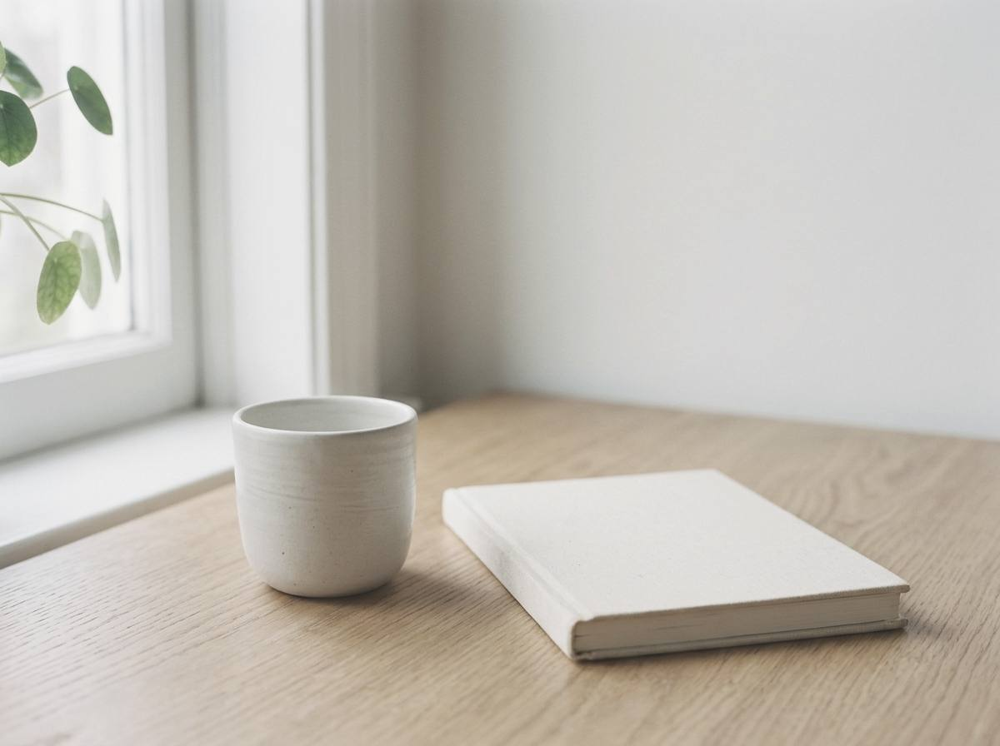

Entenda o que você repete no amor.
Se a pergunta é “o que ele sente?”, a conversa fica no outro. Em terapia, ela vira: “o que se repete em mim?”
Psicoterapia fundamentada na psicanálise, desde 1999.
A primeira conversa tem 30 minutos e é gratuita.
- +25 anos de clínica
- Atendimento exclusivo para mulheres
- Formação com Aline Follmann
Sobre o que a gente conversa
Quatro situações que você talvez reconheça. Não são diagnósticos: são pontos de partida.
Ele reaparece e tudo volta ao começo
Quando alguém reaparece, a pergunta costuma ser “será que ele ainda gosta de mim?”. Talvez valha perguntar também: o que faz esse recomeço parecer tão familiar?
Você espera a mensagem e o dia gira em torno disso
Esperar a resposta, interpretar o silêncio, explicar o que ninguém pediu. Talvez esse esforço tenha uma história mais antiga que ele. Onde você aprendeu a amar assim?
As pessoas mudam, mas a história parece a mesma
Muda o rosto, muda o nome, e o final lembra o anterior. Talvez você não esteja escolhendo mal: talvez esteja reconhecendo o que já conhece. O que há de familiar nisso?
Você sabe que faz mal, e mesmo assim fica
Saber que algo faz mal nem sempre basta para deixá-lo. Os jeitos de amar e de se proteger que a gente carrega vêm de longe. De onde vem o seu?
Se alguma soou familiar, me conte sua história. Sou preparada para te ajudar.
Como eu trabalho
Não ensino regra para segurar ou largar alguém. Quem decide é você. O que faço é ir com você atrás do padrão: o que se repete na sua história amorosa, de onde isso vem, e como lidar de forma saudável para prosperar.
Na sessão, a gente conversa de verdade: 50 minutos, por vídeo, a partir do que você traz. Eu escuto, pergunto e, às vezes, devolvo uma pergunta que você ainda não tinha feito.
- Especialista em Psicoterapia de Orientação Psicanalítica (pós-graduação lato sensu, ITI, 2000 a 2003)
- Formação em Relacionamentos e Terapia de Casal com Aline Follmann (2026)
- Formada em Psicologia pela PUCRS (1998)
- Consultório particular desde 1999
- Atendimento online desde 2019
Formas de atuação
Acompanhamento contínuo
É o caminho principal e o coração do meu trabalho. A psicoterapia de orientação psicanalítica se faz ao longo do tempo, sessão após sessão, online, em encontros de 50 minutos. Um espaço seu para falar e ser ouvida.
Sessão única
Uma conversa só, online, de 50 minutos. Serve para quem tem uma questão pontual. A conversa pode seguir depois, se você quiser.
Terapia breve (12 sessões)
Um percurso curto, com começo e fim combinados, em torno de um tema que você traz. São 12 sessões de 50 minutos, online. No fim, a gente conversa sobre o que vem depois.
O que dizem no Google e na Doctoralia
Deslize para o lado para ler as demais
Marcia me ajudou superar um dos momentos mais turbulentos da minha minha vida. Recomendo 100%, ótima profissional, muito acolhedora, sempre me senti ouvida e segura. Obrigada por tudo Márcia!
Maya E.GoogleAdoro nosso trabalho juntas! Ai de mim se não tivesse este apoio pra encarar as minhas caraminholas
AlineDoctoraliaProfissional e acolhedora na medida certa, entre outras qualidades importantes para uma Psicóloga. Super indico a Marcia.
Adri M.GoogleMárcia é uma profissional experiente e competente. Tem me ajudado no meu processo de auto conhecimento de forma responsável e ativa. Recomendo.
Elaine V.GoogleComunicação clara e objetiva. Pontualidade com os horários agendados
Mirian M.DoctoraliaAssertiva e acolhedora. Excelente terapeuta, me ajudou a conduzir processos profundos.
Debora B.DoctoraliaMárcia é uma ótima psicóloga, tem um olhar empático e cuidadoso com o outro. Indico muito!
CarolinaDoctoraliaA Márcia é extremamente atenciosa e demonstra ser uma profissional aplicada, empática e muito acolhedora. É pontual e comprometida. Estou muito satisfeita!
BrunaDoctoralia
Três passos para começar
Você me manda uma mensagem
Pelo WhatsApp, quando for melhor para você. Pode ser só um “Oi, Márcia”.
A gente faz uma primeira conversa
Gratuita, de 30 minutos, por vídeo. Você conta o que está vivendo, eu explico como trabalho e você tira suas dúvidas.
Você decide se quer seguir
Se fizer sentido, a gente combina as sessões de 50 minutos, num horário que funcione para você.

Para você, onde estiver
Atendo online, em português, mulheres no Brasil e em qualquer país. Você precisa de um celular ou computador com internet e de um lugar reservado para falar.
- Plataforma
- Google Meet, por vídeo
- Duração
- Sessões de 50 minutos
- Horários
- Segunda a sexta, das 9h às 21h (horário de Brasília), combinados de acordo com o seu fuso
- Pagamento
- Antecipado, por Pix ou cartão
Dúvidas antes de começar
Como funciona a psicoterapia online?
Os atendimentos são realizados por videochamada, pelo Google Meet, com duração aproximada de 50 minutos.
Você pode fazer a sessão de onde estiver, desde que tenha um espaço reservado, tranquilo e que preserve sua privacidade.
A terapia online é para mim?
A psicoterapia pode ser um espaço importante quando alguma coisa começa a se repetir, quando determinadas relações fazem você sofrer, quando você percebe que está vivendo os mesmos padrões ou quando simplesmente sente que precisa compreender melhor o que está acontecendo com você.
Ansiedade, dificuldades nos relacionamentos, autoestima, recomeços, sobrecarga emocional e burnout são algumas das questões que podem aparecer no processo terapêutico.
Você não precisa estar vivendo uma grande crise para procurar terapia.
Como é a primeira conversa?
A primeira conversa é gratuita, tem 30 minutos e é, antes de tudo, um momento para nos conhecermos.
Você pode falar sobre o que trouxe você até aqui, sobre o que está acontecendo na sua vida e sobre aquilo que gostaria de compreender ou transformar.
Não precisa chegar sabendo exatamente o que dizer. A partir da sua fala, vamos construindo o caminho do processo terapêutico.
Qual é a sua abordagem?
Meu trabalho é fundamentado na psicanálise e na escuta clínica.
A terapia é um espaço para compreender aquilo que se repete, reconhecer padrões, elaborar experiências e construir novas possibilidades.
Não se trata de receber respostas prontas ou alguém dizendo a você o que fazer. Trata-se de poder olhar para sua história, suas escolhas e seus modos de se relacionar de uma maneira diferente.
Quanto tempo dura cada sessão?
Cada sessão tem duração aproximada de 50 minutos.
Qual é o valor da sessão?
A primeira conversa, de 30 minutos, é gratuita. O valor das sessões eu te passo pelo WhatsApp, junto com os horários disponíveis.
Como é feito o pagamento?
Para confirmar o horário escolhido, é solicitado o pagamento antecipado do valor da sessão, via Pix ou cartão.
Como faço para agendar?
Você pode entrar em contato comigo pelo WhatsApp e me contar brevemente o que motivou você a buscar terapia neste momento.
A partir disso, conversamos sobre o processo e verificamos juntas o melhor dia e horário para o seu atendimento.
Atende pessoas que moram fora do Brasil?
Sim.
Os atendimentos são realizados online, em português, para mulheres adultas que estejam no Brasil ou em outros países.
Preciso estar em um lugar específico para fazer a sessão?
É importante que você esteja em um espaço onde tenha privacidade e tranquilidade para falar livremente.
A qualidade da sessão também depende de poder estar presente naquele momento sem interrupções ou outras pessoas por perto.
Como funciona o sigilo?
O atendimento psicológico é realizado em ambiente privado e sigiloso, respeitando os princípios éticos da profissão.
Por isso, também é importante que você escolha um espaço reservado para realizar sua sessão.
Quantas sessões eu preciso fazer?
Não existe um número de sessões igual para todas as pessoas.
Cada processo tem seu próprio ritmo e depende das questões que estão sendo trabalhadas, da história de cada pessoa e do caminho construído ao longo da terapia.
Atende por plano de saúde?
Os atendimentos são particulares.
Caso seu plano de saúde ofereça reembolso para psicoterapia, posso fornecer a documentação necessária referente às sessões realizadas.
E se eu ainda não tiver certeza se devo fazer terapia?
Você não precisa ter todas as respostas antes de começar.
Às vezes, o primeiro passo é justamente poder falar sobre aquilo que está difícil de compreender sozinha.
Se alguma coisa vem incomodando você, se determinadas situações continuam se repetindo ou se sente que chegou o momento de olhar para sua história de outra maneira, talvez seja um bom momento para conversar.
Se fizer sentido para você, podemos conversar.
E se eu estiver em crise agora?
Se você está em risco agora, ligue para o SAMU, 192, ou para o CVV, 188. O WhatsApp deste site serve para marcar a conversa, não para emergência.
Vamos conversar sobre como você ama?
Mande um Whats, é direto comigo.